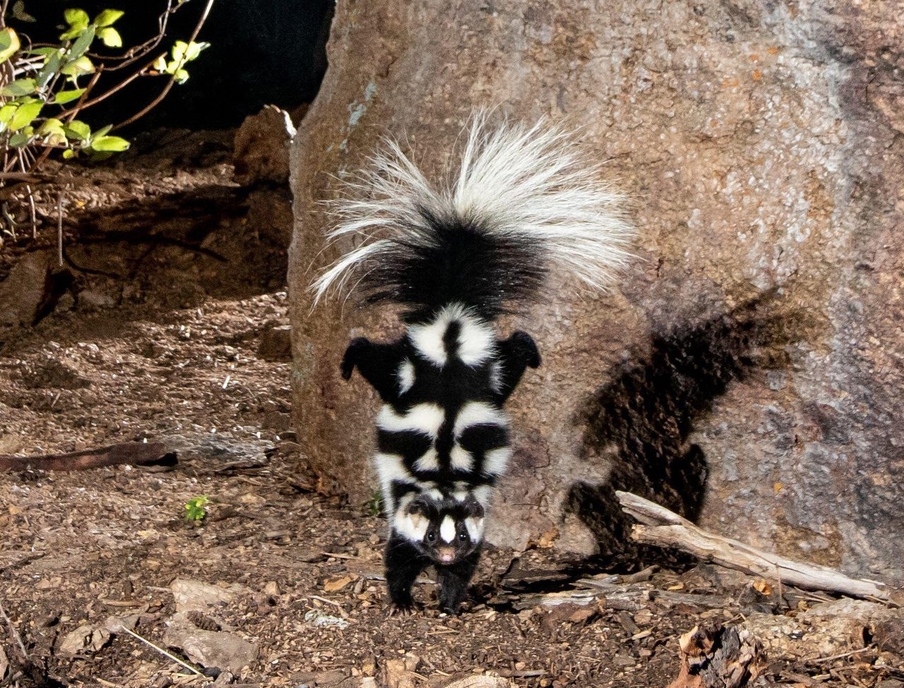
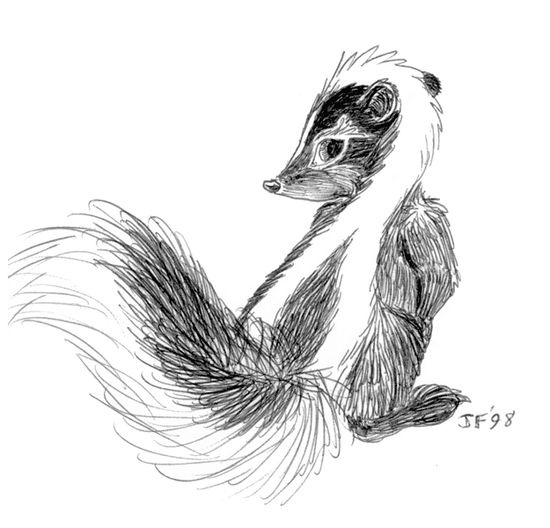

Misconceptions:
Skunks are mild-tempered, mostly nocturnal, small mammals. Skunks are often misunderstood when it comes to their defense mechanisms, as they only spray when being attacked. Even when other animals or people are in close proximity, skunks will ignore the intruders unless they are disturbed.
Good for the Enviroment
Skunks are especially beneficial to farmers, gardeners, and landowners as they feed on pests. While young skunks are cute and kitten-like, they are wild animals and it is illegal to keep them as pets.
| Types of Skunks | Habitats | Charicteristics |
|---|---|---|
| Striped Skunk | Suburban Neighborhoods | Black with white stripe, size of house cat |
| Hooded Skunk | Forests, Grasslands | Soft fur, long tail, two stripes |
| Spotted Skunk | Open lands with sufficient coverage | Distinct spotting along body and tail |
According to PBS.org, "Skunks have not always been classified as their own family. Skunks were originally grouped inside the Mustelidae family (weasels, otters, badgers, and their relatives) because of the physical similarities including a squat body, strong claws for digging, ect."